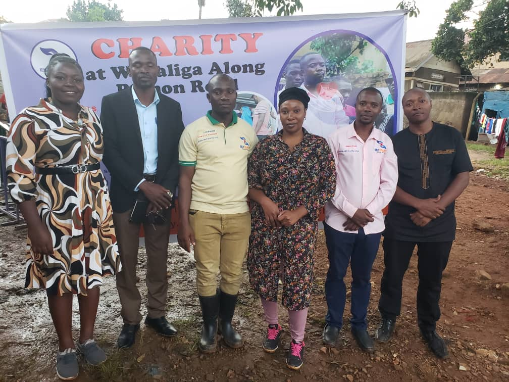

A leading Ugandan NGO where every vulnerable person lives a fulfilled, rewarding life with dignity and opportunity.

Our Uganda-based team brings together a powerful blend of deep community field operations expertise, strategic public-private teeams, human-centered design for social service delivery, rigorous research and data science, and cutting-edge digital and financial tools all to build, deploy, and scale solutions that drive prosperity and resilience for Uganda's vulnerable communities.
We partner with the Ministries of Health, Education, and Gender, along with district governments in 22 of Uganda’s districts, who co-own our interventions and work with us to design what and how we measure impact for effective decision-making. These teeams have helped us reach over 20,000 vulnerable children, youth, women, and elderly people with our solutions across 500+ community groups, schools, and health outreach hubs, and will continue to be the cornerstone of how we approach the path to national scale in Uganda.
ceo/president
Board of Director
Board of Director
Secretary
regional coodinator
field officer
chairman board of trustees
Partnerships are the backbone of our work. We believe sustainable impact is achieved through strong partnerships.
We work with national and district governments to co‑design solutions for vulnerable communities.
EKFcharity collaborates with a diverse network of research institutions, NGOs, and social service providers to ensure every vulnerable family has a path to sustainable prosperity.
Eng. Kazibwe Essien
Founder & Executive Director, EKFcharity
Eng. Kazibwe Essien founded EKFcharity (Essien Kazibwe Foundation) on 27th December 2015 with a singular vision: to see all vulnerable people live fulfilled and rewarding lives.
Born and raised in Uganda, Eng. Kazibwe witnessed firsthand the challenges faced by vulnerable children, youth, women, and elderly people in accessing basic healthcare, education, and protection. Driven by a deep sense of stewardship and community empowerment, he left a promising engineering career to build an organization that would give hope to those who need it most.
Under his leadership, EKFcharity has grown from a one‑person dream to a nationally certified NGO partnering with 22 district local governments and national ministries across Uganda. Today, the foundation reaches thousands of vulnerable families with life‑changing programs in health, education, livelihoods, child protection, and emergency relief.
Eng. Kazibwe believes that every heart deserves hope and he continues to lead with passion, integrity, and resilience, ensuring that no vulnerable person is left behind.
"Our wish for every heart is the desire to make it so. Together, we can end hunger, improve health, educate every child, and overcome adversity one community at a time."
Eng. Kazibwe Essien